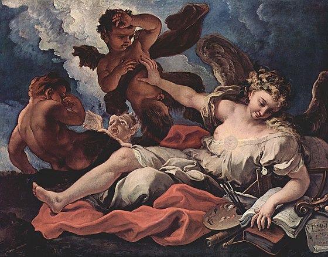
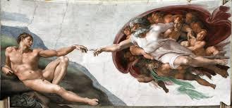

Картинна
галерея
Тут ви знайдете багато цікавого про мистецтво
Вітання
Ласкаво просимо до нашої картинної галереї, де мистецтво оживає у кожному куточку.
У наших залах ви знайдете унікальну колекцію шедеврів, яка охоплює різні епохи та стилі, від
класичних полотен до сучасних інсталяцій. Запрошуємо поринути у світ краси та натхнення, відкривати
нові горизонти через призму вишуканих творів мистецтва.
Перейти до наступного розділу
Мистецтво — це унікальний спосіб вираження людської душі, емоцій і мислення. Художники, за допомогою своїх картин, створюють
вікна у світи, що існують як в їхній уяві, так і в реальності. Картини можуть бути реалістичними або абстрактними, але кожна з них
несе в собі певну енергію та емоції, які здатні торкнутися глядача, незалежно від його культурного чи соціального фону. Великий Ван Гог
передавав свій внутрішній світ через яскраві кольори та виразні мазки, створюючи шедеври, що живуть і зараз. Моне своїми імпресіоністичними
пейзажами змушував задуматися про мінливість моменту. Сучасні митці експериментують з новими техніками та матеріалами, досліджуючи межі
людського сприйняття. Кожна картина — це не лише зображення, а й історія, запрошення до роздумів, діалогу між художником і глядачем.
У світі мистецтва немає меж, є лише нескінченні можливості для самовираження і творення.
Мистецтво завжди було важливою складовою людської культури, відображаючи дух епохи, в якій воно створювалося. Великі митці минулого,
такі як Леонардо да Вінчі та Мікеланджело, залишили нам у спадок твори, що стали вічними символами геніальності та майстерності. Їхні
картини та скульптури зберігають не лише технічну досконалість, але й глибокий філософський зміст, що вражає глядачів вже століттями.
Рембрандт, зі своїми проникливими портретами, розкривав найтонші нюанси людської природи та емоцій. У ХХ столітті Пікассо та Далі змінили
уявлення про мистецтво, використовуючи новаторські підходи та стилі. Вони показали, що мистецтво може бути відображенням не лише зовнішнього
світу, але й внутрішніх переживань та підсвідомих процесів. Сучасні художники, такі як Бенксі, часто використовують свої роботи для
соціальних та політичних висловлювань, залучаючи широку аудиторію до важливих суспільних дискусій. Картини є дзеркалом часу, в якому вони
створюються, і водночас вічним відображенням універсальних людських тем — кохання, втрат, пошуку сенсу. Таким чином, мистецтво залишається
однією з наймогутніших форм комунікації, здатною з'єднати минуле і майбутнє, особисте і загальнолюдське.
Ось тут можна перейти на сайт
Лувру, щоб побачити інші витвори мистецтва
Аналіз картини

Картина є твором французького художника XVII століття Симона Вуе і називається "Алегорія живопису".
На цій картині ми бачимо кількох фігур, кожна з яких виконує свою роль у композиції. Центральна фігура – це алегорія Живопису,
зображена у вигляді жінки, яка тримає палітру та пензлі, символи мистецтва та творчості. Вона спокійно лежить, оточена іншими фігурами, які
допомагають створити багатошаровий та динамічний сюжет. Навколо неї знаходяться путті (маленькі крилаті діти), які часто використовувалися в
алегоричних сценах для додавання грайливості та символізму.
Пейзаж у фоновій частині картини разом із хмарами та світлом, що пробивається через них, створює відчуття простору та глибини. Світло
акцентує увагу на центральній фігурі, підкреслюючи її значимість. Колористична палітра картини багата на контрасти: теплі тони шкіри та
одягу протиставлені холодним відтінкам неба та хмар. Цей контраст допомагає виділити головні елементи композиції, роблячи їх більш помітними
та виразними. Алегорія на картині Вуе відображає значущість мистецтва в житті та суспільстві. Вона підкреслює творчий акт як процес, що поєднує
в собі натхнення, техніку та емоції. Картина також показує, як мистецтво впливає на глядача, захоплюючи його увагу та викликаючи глибокі
почуття.
Загалом, "Алегорія живопису" Симона Вуе є прикладом барокового мистецтва з його багатством деталей, динамічними композиціями та глибоким
символізмом. Картина демонструє майстерність художника в передачі складних ідей через зображення та кольорові рішення.

"Створення Адама" зображує біблійну сцену, де Бог дає життя першій людині, Адаму. На фресці ми бачимо Бога, оточеного ангелами, який
простягає руку до Адама. Адам лежить на землі і також простягає руку до Бога. Важливий момент у композиції фрески — це майже дотик пальців
Бога і Адама, який символізує акт створення і передачі життя.
Також ви можете переглянути галерею
Це приклад параграфа.
Ще один параграф для демонстрації.
Тут ви можете знайти інформацію про картини
Тут ви можете знайти інформацію про мистецтво
Тут наші контакти